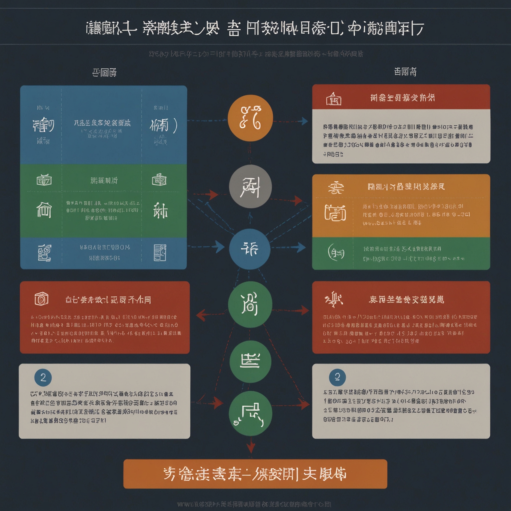
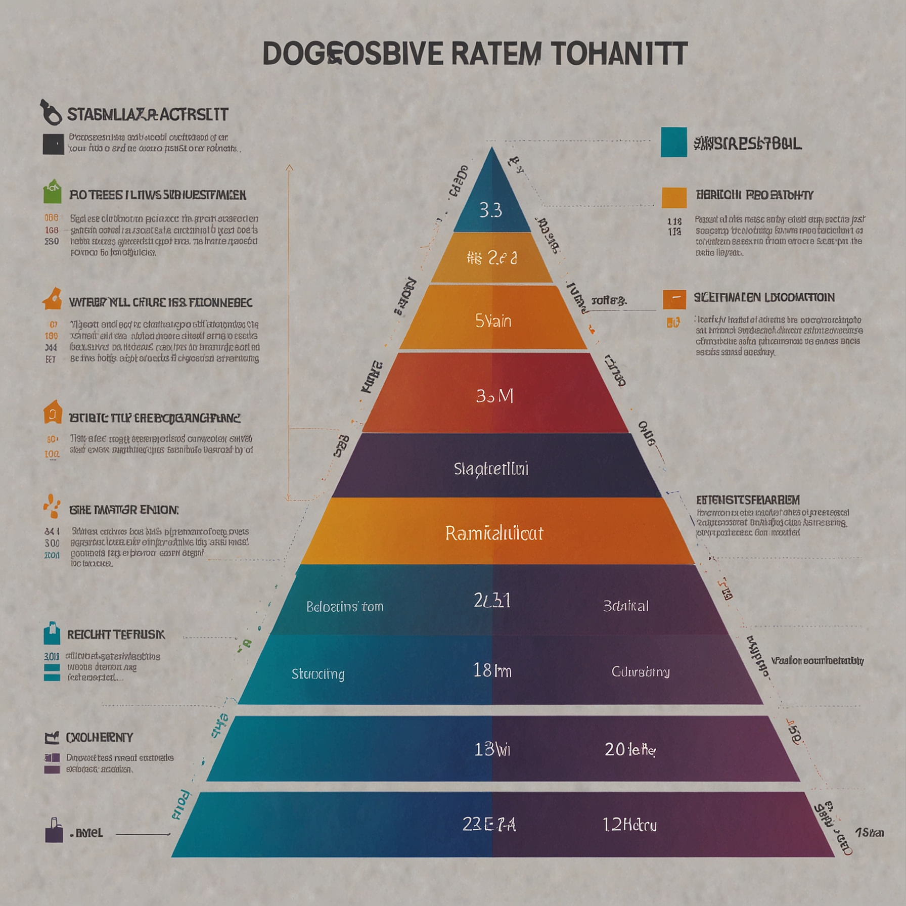
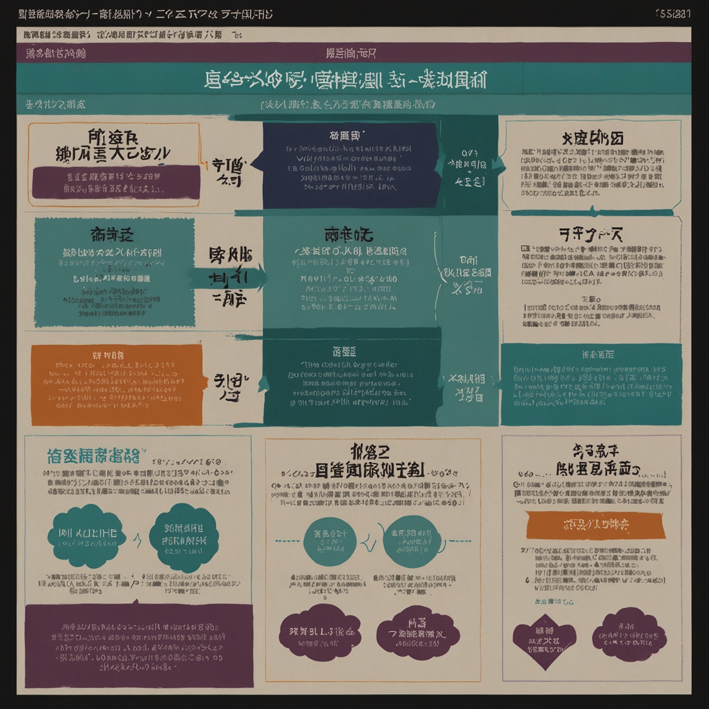
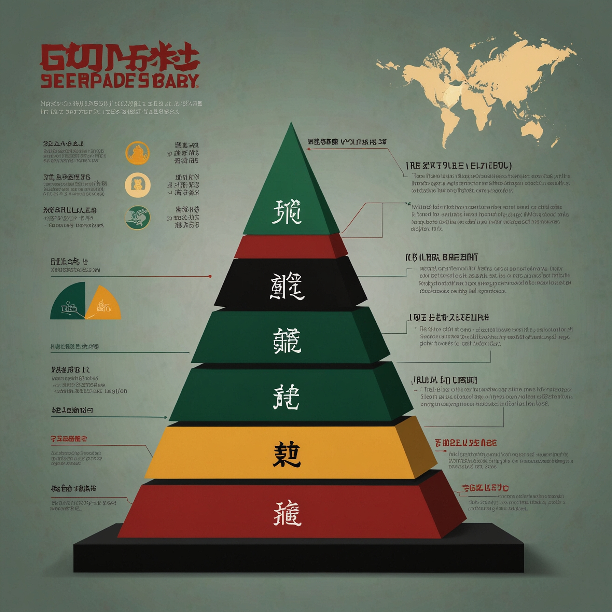
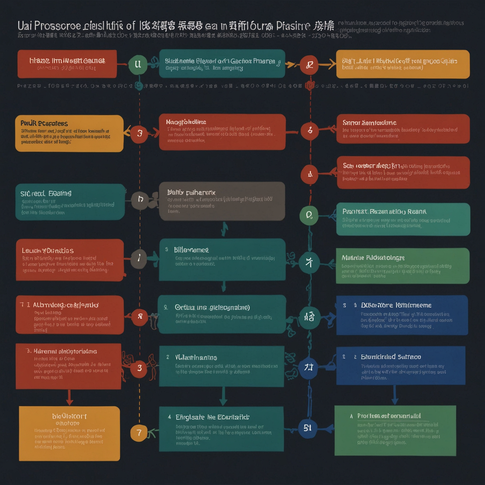

事案の概要
本件は、東京都立学校の卒業式等において、校長の職務命令に従わず、国歌斉唱時に起立しなかった教職員約170名に対し、東京都教育委員会が懲戒処分を行った事案である。
東京都教育委員会は、平成15年に「入学式、卒業式等における国旗掲揚及び国歌斉唱の実施について」という通達を発し、各学校長に対し、卒業式等において国旗掲揚・国歌斉唱を適正に実施するよう指示した。
これに基づき、各学校長は教職員に対し、国歌斉唱時に起立して斉唱するよう職務命令を発した。
しかし、一部の教職員は、思想・良心の自由を理由に、この職務命令に従わず、国歌斉唱時に起立しなかった。
東京都教育委員会は、職務命令違反を理由に、これらの教職員に対し、懲戒処分を行った。処分の内容は、戒告、減給、停職であり、過去の処分歴に応じて段階的に重くなる基準が適用された。
具体的には、「1回目の違反は戒告、2回目・3回目は減給、4回目以降は停職」という処分基準が設けられていた。
処分を受けた教職員は、この懲戒処分が裁量権の逸脱・濫用に当たり違法であるとして、処分の取消しを求めて出訴した。
最高裁判所の判断
最高裁判所は、戒告処分については適法と判断したが、減給処分及び停職処分の一部については、裁量権の逸脱・濫用があるとして取り消した。
戒告処分について
国歌斉唱時の起立斉唱行為は、慣例上の儀礼的所作としての性質を有し、敬意の表明の要素を含むものである。しかし、職務命令に従わなかったことに対する懲戒処分として戒告を選択することは、処分権者の裁量権の範囲内にあり、違法とはいえない。
減給処分・停職処分について
起立斉唱行為は、上記のような性質を有するにとどまり、これに対する不起立は、積極的に教育の内容や方法に介入して式典の進行を妨害するものではない。したがって、過去に1回ないし数回、同様の職務命令違反を繰り返したことを理由として、直ちに減給や停職の処分を選択することは、慎重な考慮が必要である。
本件では、過去の処分歴に応じて機械的に処分を重くする基準が適用されており、個別の事情についての慎重な考慮がされていない。このような処分の選択は、処分の重きに失し、裁量権の範囲を逸脱し、又はこれを濫用したものとして違法である。
結論
戒告処分168件については適法と判断し、減給処分及び停職処分の一部については違法として取り消した。
裁量基準と不利益処分
裁量基準とは、行政庁が裁量処分を行う際に、判断の統一性・公平性を確保するために定める内部的な基準のことです。
不利益処分とは、行政庁が国民に義務を課し、又はその権利を制限する処分であり、懲戒処分、営業停止処分、免許取消処分などがこれに当たります。
不利益処分においても、処分の選択や程度について行政庁に裁量が認められる場合があります。例えば、懲戒処分においては、戒告、減給、停職、免職など、複数の処分の種類があり、どの処分を選択するかは処分権者の裁量に委ねられています。
このような裁量処分において、処分の統一性・公平性を確保するため、行政庁は処分基準を定めることがあります。行政手続法12条は、不利益処分について、処分基準を定め、かつ、これを公にしておくよう努めるべきことを規定しています。
本件で問題となったのは、東京都教育委員会が定めた「過去の処分歴に応じて段階的に処分を重くする」という処分基準です。この基準は、「1回目は戒告、2回目・3回目は減給、4回目以降は停職」という機械的な運用がされていました。
最高裁は、このような処分基準の機械的適用が、個別事情の考慮を欠き、裁量権の逸脱・濫用に当たる場合があることを明らかにしました。
段階的処分と比例原則
懲戒処分においては、違反行為の性質・内容、その結果、被処分者の情状などを総合的に考慮して、処分の種類と程度を決定することが求められます。
特に、同種の違反を繰り返した場合に処分を段階的に重くするという運用は、多くの行政機関で採用されています。これは、再発防止と規律維持の観点から、一定の合理性があります。
しかし、段階的処分を行う場合でも、個別の事情を考慮せず、過去の処分歴のみを基準として機械的に処分を重くすることは、比例原則に反するおそれがあります。
比例原則とは、行政目的を達成するために必要な範囲を超えて、国民の権利・自由を制限してはならないという原則です。懲戒処分においては、違反行為の悪質性や影響の程度に応じて、必要最小限度の処分を選択しなければなりません。
本件において、最高裁は、国歌斉唱時の不起立という行為の性質に着目しました。不起立行為は、「慣例上の儀礼的所作としての性質を有する」起立斉唱行為を行わなかったというものであり、「積極的に教育の内容や方法に介入して式典の進行を妨害するもの」ではないとされました。
このような性質の違反行為について、過去に1回ないし数回の違反歴があるというだけで、直ちに減給や停職という重い処分を選択することは、比例原則に照らして問題があるとされたのです。
過去の処分歴の考慮
懲戒処分において、過去の処分歴を考慮することは、一般に許容されています。同種の違反を繰り返す者に対しては、より重い処分を科すことにより、再発防止の実効性を高めることができるからです。
しかし、過去の処分歴をどのように評価し、どの程度重視するかは、個別の事情に応じて判断されなければなりません。
本件では、東京都教育委員会が、「1回目は戒告、2回目・3回目は減給、4回目以降は停職」という基準を設け、過去の処分歴に応じて機械的に処分を重くしていました。
最高裁は、このような機械的な運用について、以下の点を指摘しました。
第一に、不起立行為は、式典の進行を妨害する性質のものではなく、その悪質性は比較的低い。
第二に、過去の処分歴があるとしても、それが1回ないし数回にとどまる場合、直ちに減給や停職という重い処分を選択することは、処分の重きに失する。
第三に、処分の選択に当たっては、違反行為の性質、過去の処分歴、被処分者の勤務状況、他の事案との均衡など、諸般の事情を総合的に考慮する必要がある。
したがって、過去の処分歴のみを基準として、他の事情を考慮することなく機械的に処分を重くすることは、裁量権の逸脱・濫用に当たるとされたのです。
減給・停職処分の慎重な判断
最高裁は、戒告処分については適法と判断しましたが、減給処分及び停職処分については、「慎重な考慮」が必要であるとして、一部を違法と判断しました。
この判断は、処分の種類によって、裁量の幅や考慮すべき事項が異なることを示しています。
戒告処分は、最も軽い懲戒処分であり、将来を戒める意味を持つにとどまります。職務命令違反に対して戒告処分を選択することは、処分権者の裁量の範囲内として許容されやすいといえます。
これに対し、減給処分は、給与の一部を減額するものであり、経済的不利益を伴います。停職処分は、一定期間職務に従事させず、その間給与を支給しないものであり、さらに重大な不利益を伴います。
このような重い処分を選択するには、違反行為の悪質性、影響の程度、再発防止の必要性など、諸般の事情を慎重に考慮しなければなりません。
本件において、最高裁は、不起立行為が「式典の進行を妨害するもの」ではないという性質に着目し、このような行為について、過去に数回の違反歴があるというだけで減給・停職処分を選択することは、「慎重な考慮を欠く」として違法と判断しました。
この判断は、行政庁が処分基準を定める場合でも、処分の種類に応じて、個別事情の考慮の程度を変える必要があることを示しています。
軽い処分については、基準に従った画一的な運用が許容されやすいのに対し、重い処分については、より慎重な個別判断が求められるのです。
裁量権の逸脱・濫用の判断基準
行政処分が裁量権の逸脱・濫用に当たるか否かは、処分の目的、性質、内容、手続などを総合的に考慮して判断されます。
行政事件訴訟法30条は、「裁量権の範囲をこえ又はその濫用があった場合に限り」、裁判所が行政処分を取り消すことができると定めています。
裁量権の逸脱とは、法が認めた裁量の範囲を超えて処分を行うことをいいます。例えば、考慮すべき事項を考慮せず、又は考慮すべきでない事項を考慮して処分を行った場合などがこれに当たります。
裁量権の濫用とは、裁量の範囲内であっても、社会通念上著しく妥当性を欠く処分を行うことをいいます。例えば、処分の目的を逸脱した処分、他事考慮による処分、比例原則に反する処分などがこれに当たります。
本件において、最高裁は、以下の点を考慮して、減給・停職処分の一部について裁量権の逸脱・濫用を認めました。
第一に、不起立行為の性質が、式典を妨害するものではないこと。
第二に、過去の処分歴が1回ないし数回にとどまること。
第三に、処分基準の機械的適用により、個別事情の考慮が欠けていること。
第四に、減給・停職という重い処分を選択するには、慎重な考慮が必要であること。
これらの事情を総合すると、本件の減給・停職処分は、処分の重きに失し、社会通念上著しく妥当性を欠くものとして、裁量権の逸脱・濫用に当たると判断されたのです。
本判決の意義と実務への影響
本判決は、不利益処分における処分基準の運用について、重要な判断を示しました。
第一に、本判決は、処分基準を定めることの重要性を認めつつ、その機械的適用の危険性を指摘しました。処分基準は、処分の統一性・公平性を確保するために有用ですが、個別事情を考慮せずに機械的に適用すると、かえって不公平な結果を招くおそれがあります。
第二に、本判決は、処分の種類に応じて、個別事情の考慮の程度が異なることを明らかにしました。軽い処分については基準に従った画一的運用が許容されやすいのに対し、重い処分については慎重な個別判断が求められます。
第三に、本判決は、違反行為の性質を重視する姿勢を示しました。同じ職務命令違反でも、式典を妨害するような積極的行為と、消極的な不作為とでは、悪質性が異なります。処分の選択に当たっては、このような違反行為の性質を考慮しなければなりません。
第四に、本判決は、段階的処分の運用について、一定の指針を示しました。過去の処分歴に応じて段階的に処分を重くすることは許されますが、機械的に重くするのではなく、個別事情を総合的に考慮して判断しなければなりません。
本判決以後、行政実務においては、処分基準を定める際に、個別事情を考慮する余地を残すこと、重い処分については特に慎重な判断を行うこと、違反行為の性質に応じて処分を区別することなどが意識されるようになりました。
また、本判決は、思想・良心の自由と職務命令との関係についても、間接的に影響を与えました。最高裁は、職務命令自体の合憲性については肯定しつつ、処分の選択については慎重な判断を求めることにより、一定の配慮を示したといえます。
参考文献
最高裁判所判例(最判平成24年1月16日判時2147号127頁)を基に独自に作成